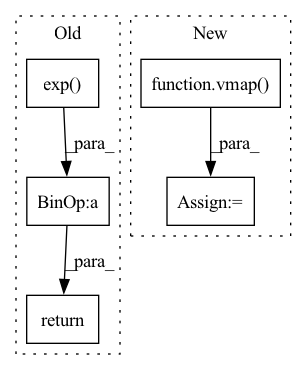

Pattern ID :15539

Before Change
:return: sigmoid on x
:rtype: jax.array
return jnp.exp(x) / (jnp.exp(x) + 1.)
def log_sigmoid(x):
After Change
:return: sigmoid on x
:rtype: jax.array
f = vmap(_sigmoid)
return f(x)
def log_sigmoid(x):
In pattern: SUPERPATTERN
Frequency: 3
Non-data size: 5
Instances
Fragment ID: 52583810
Project Name: dssc-projects/veni
Commit Name: ad26372faa6eec17671c9856ff18c2e82c979cb3
Time: 2022-05-08
Author: 93731561+dario-coscia@users.noreply.github.com
File Name: jax_forward/functional.py
M Class Name: AnonimousClass
N Class Name: AnonimousClass
M Method Name: sigmoid(1)
N Method Name: sigmoid(1)
M Parent Class:
N Parent Class:
M File Name: jax_forward/functional.py
N File Name: jax_forward/functional.py
M Start Line: 47
M End Line: 47
N Start Line: 97
N End Line: 98
'>
Before Change
:return: softmax on x
:rtype: jax.array
return jnp.exp(x) / jnp.exp(x).sum()
def log_softmax(x):
After Change
:return: softmax on x
:rtype: jax.array
f = vmap(_softmax)
return f(x)
def log_softmax(x):
'>
Fragment ID: 52583808
Project Name: dssc-projects/veni
Commit Name: ad26372faa6eec17671c9856ff18c2e82c979cb3
Time: 2022-05-08
Author: 93731561+dario-coscia@users.noreply.github.com
File Name: jax_forward/functional.py
M Class Name: AnonimousClass
N Class Name: AnonimousClass
M Method Name: softmax(1)
N Method Name: softmax(1)
M Parent Class:
N Parent Class:
M File Name: jax_forward/functional.py
N File Name: jax_forward/functional.py
M Start Line: 93
M End Line: 93
N Start Line: 174
N End Line: 175
'>
Before Change
if beta * x > threshold:
return x
return jnp.log(1. + jnp.exp(beta * x)) / beta
def softmax(x):
After Change
:return: softplus on x
:rtype: jax.array
f = vmap(_softplus)
return f(x)
def _softmax(x):
'>
Fragment ID: 52583809
Project Name: dssc-projects/veni
Commit Name: ad26372faa6eec17671c9856ff18c2e82c979cb3
Time: 2022-05-08
Author: 93731561+dario-coscia@users.noreply.github.com
File Name: jax_forward/functional.py
M Class Name: AnonimousClass
N Class Name: AnonimousClass
M Method Name: softplus(1)
N Method Name: softplus(3)
M Parent Class:
N Parent Class:
M File Name: jax_forward/functional.py
N File Name: jax_forward/functional.py
M Start Line: 61
M End Line: 82
N Start Line: 136
N End Line: 152